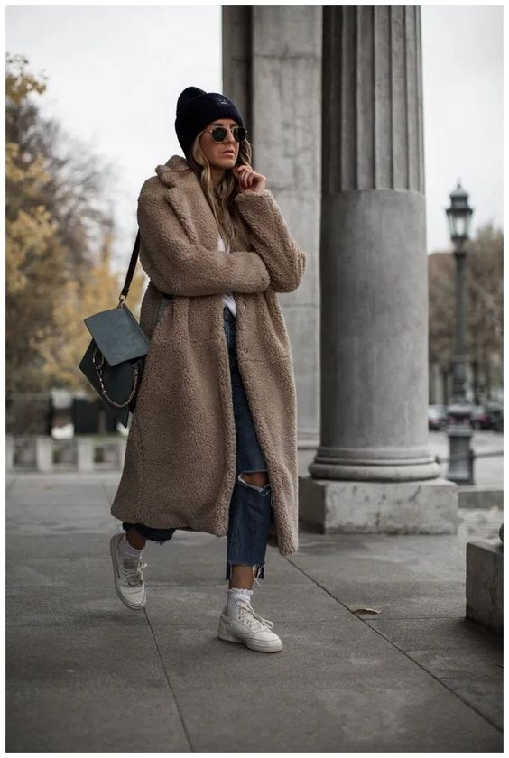
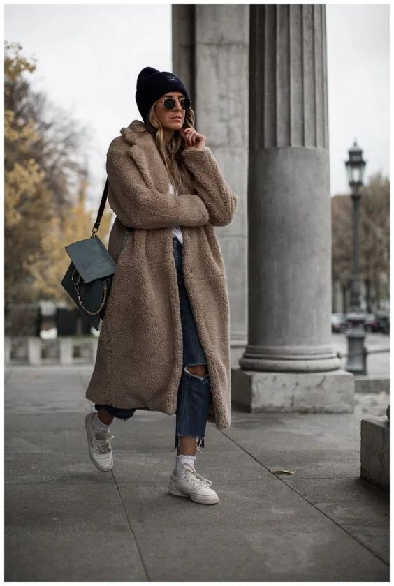
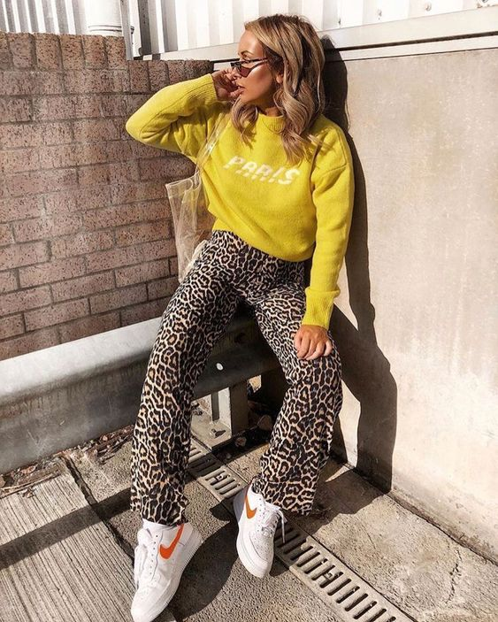

Esta tendecia Europea única que viene desde el pasado es la Boina
Las boinas pueden tener todo tipo de diseño y colores, son un accesorio que sin dudarlo le da un toque elengante a cualquier outfit.


Otra tendencia son las faldas plisadas
La falda plisada es una falda que llega hasta un poco mas arriba de el tobillo. Casi siempre es mas acampanada hacia abajo. Esta le dará un toque especial a tu look de invierno.


El Teddy Bear Coat
Este abrigo le da un toque más informal a tu outfit. Muchas lo usan en una talla oversized.
 

Joyas XL
Las joyas XL sin duda le han sido una nueva moda, este año. La gracia de usar joyas más grotescas en invierno, es que estas se notan más al estar usando mas ropa y capas por el frío.
Medias que acompañan Shorts y Faldas
Esta son ideales para usar ropa de cualquier estación del año, pero con un toque invernal. Además de protegernos del frío.

Pantalón de Tiro Alto
Los pantalones de tiro alto forman un look muy diferente a los pantalones de tiro bajo. Generalmente estos los pantalones de tiro alto son usados con cinturones y poleras puestas dentro de ellos.
Zapatillas de Caña Alta o Bototos
Estas opciones son ideales, ya que nos protegen del frío y nos dan estilo al mismo tiempo.
Estampados
Los estampados le dan un toque personal a cada outfit, lo hace mas salvaje, atrevido y alocado. Hay que ser cuidadosa al meszclarlos

Bananos
Los bananos ahora son una nueva tendencia, estos hacen el look mas "chic" y generalmente son usados cruzados debajo de un brazo.
Hoodies Debajo de Abrigo
Porque en invierno varias capas a la vez es la única solución, en este invierno una tendencia será usar hoodies o polerones debajo de otro abrigo.
Para más información sobre tendencias haz click aquí
Aquí hay links sobre temas relacionados
- Vístete de Acuerdo a tu Forma de Cuerpo
- Como Vestirse Según el Tono de Piel
- Básicos que no Pueden Faltar en tu Closet
Para volver a la página principal:click aquí